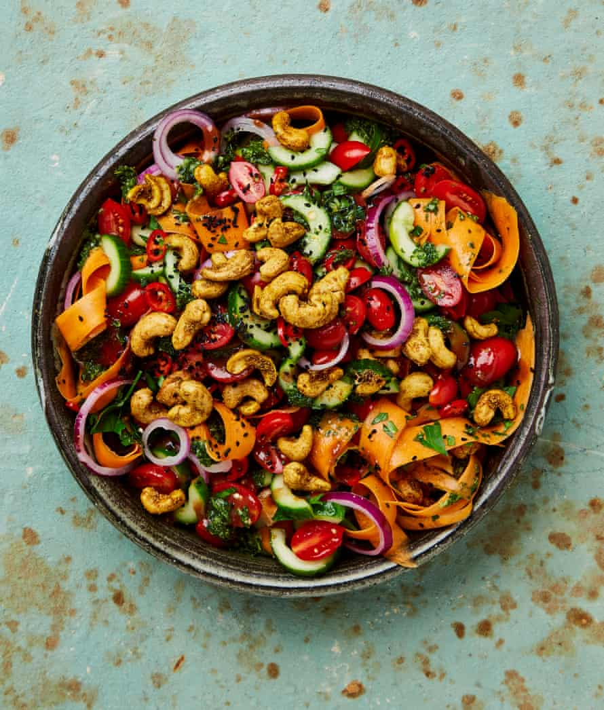

Cucumber crunch salad with curried cashews

This fresh, crunchy salad is the perfect accompaniment to all kinds of savoury rice dishes.
For the curried cashews
For the tamarind dressing
For the mint dressing
Heat the oven to 170C (150C fan)/325F/gas 3.
In a large bowl, mix the cucumbers and tomatoes with a half-teaspoon of salt and leave to sit for 30 minutes.
In a small bowl, mix all the ingredients for the curried cashews with a quarter-teaspoon of salt, then spread out on a small oven tray and roast for 15 minutes, until deeply golden and dark in places. Remove and leave to cool.
Meanwhile, mix all the tamarind dressing ingredients in a small bowl and set aside.
Put all the mint dressing ingredients in a small food processor, add a half-teaspoon of salt, and blitz to an almost-smooth green dressing.
Drain the cucumber and tomato, discarding the liquid they’ve released. On a large, lipped platter, artfully layer up the cucumber, tomato, onion rounds, carrot ribbons, chilli, parsley and both dressings. Top with a scattering of the cashews and nigella seeds, and serve.